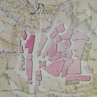
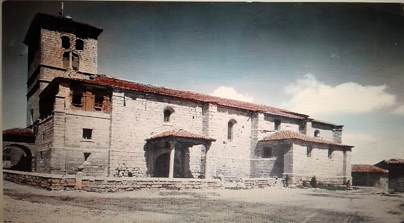
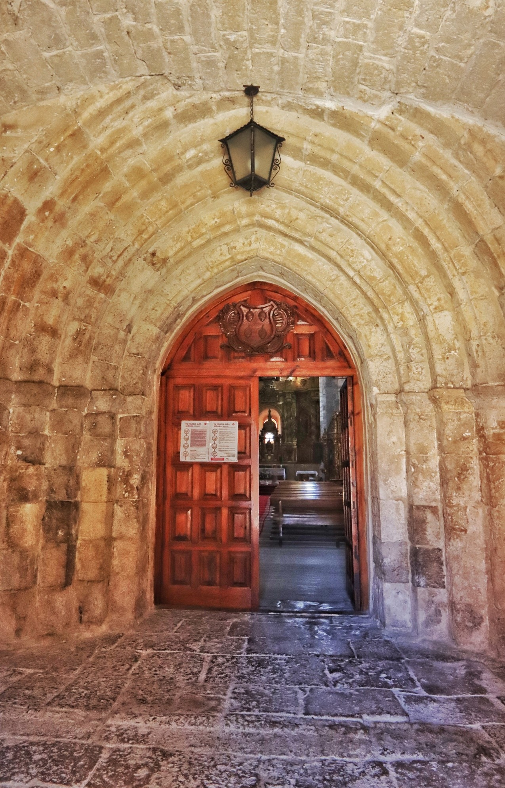

En el año 1345, “Pinna” ya era citada en la estadística más antigua de la diócesis de Palencia, perteneciendo al arciprestazgo de Población, integrando el arcedianazgo de Carrión

Antiguo mapa de Piña de Campos
En el año 1484, Garcí Fernández Manrique de Lara será nombrado primer
marqués de Aguilar por los Reyes Católico. Con la concesión de esta
dignidad, la villa de Piña entrará en el Marquesado de Aguilar. Un
descendiente directo del primer Marqués de Aguilar, Fray Bernardo
Manrique de Lara -Obispo de Málaga-, será quien done los “maravedíes“
necesarios para construir un nuevo templo, el cual ha llegado hasta
nuestros días.

Antigua foto de la Iglesia
La actual iglesia se construye sobre los restos de lo que fuera un primitivo
templo románico del primer tercio del siglo XIII, de clara influencia
cisterciense, del que únicamente quedan algunos elementos
arquitectónicos.

Portada románica, principios del siglo XIII
Construido en su mayor parte en el S. XVI, de estilo gótico. Aunque las
obras no terminarán hasta el S. XVII, el edificio mantiene un estilo unitario
que le aporta un mayor interés arquitectónico.
Situándose al frente de esta obra el maestro de obra Juan de Arce, junto
con sus ayudantes Fernando del Río, Fernando de la Puente y Hernando
del Hoyo.